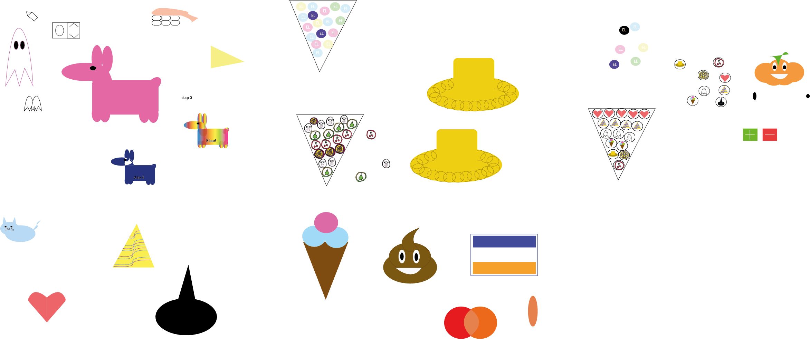

Hci: Voor hci moest ik begrippen leren zoals Command line interface, Graphic user interface, Natural user interface en Organic user interface. En nog veel meer.. De basisprinciepes van HCI helpen je het ontwerpen van een website waarin de gebruikers hun informatie snel en goed kunnen vinden. Zonder dat zij afgeleid worden door chaos, of een onnodig moeilijke interface. Onze eindopdracht was het ontwerpen van een website die rekening hield met de regels en begrippen van HCI. Deze website is gemaakt met illustrator en u kunt goed zien in de foto's dat ik hier nog helemaal nieuw ben in het designen van website's. Gelukkig was dat op dit moment nog niet belangrijk en heb ik op basis van de geleerde HCI begrippen het vak behaald.
